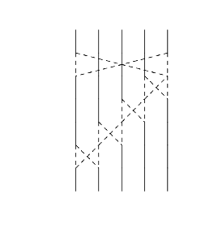
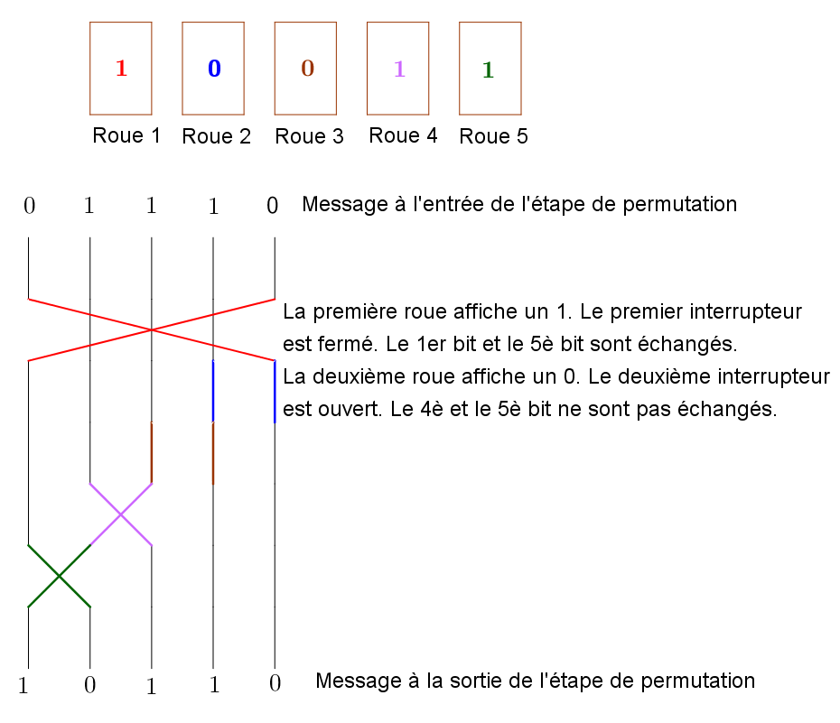

Détails du fonctionnement de la machine G-Schreiber
La machine G-Schreiber combine les fonctionnalités d'un téléscripteur (c'est-à-dire d'un appareil permettant la génération et la réception de messages via des signaux électriques) et d'une machine à chiffrer. Dans un premier temps, les lettres sont transformées en une série de cinq impulsions électriques, suivant un code binaire, c'est-à-dire que chaque lettre est remplacée par une série de 5 bits valant 0 ou 1, et indiquant si le courant passe ou non. Ainsi, A est transformé en la suite 11000, B en la suite 10011, suivant le code Baudot qui préfigurait le code ASCII bien connu des ordinateurs actuels. On peut ainsi coder $2^5=32$ symboles, soit moins que les 26 lettres et les 10 chiffres, mais un ingénieux système de double alphabet permettait de coder l'un ou l'autre.
Ces groupes de 5 bits (pour nous, ces groupes de 5 chiffres valant 0 ou 1) sont ensuite chiffrés par la partie chiffrante de la G-Schreiber suivant deux principes différents : d'abord une addition terme à terme avec une suite variable, puis une permutation du résultat obtenu. Ces opérations étaient commandées par un ensemble de 10 roues crantées. Chacune de ces roues possède un certain nombre de positions, chaque position représentant un 0 ou un 1. Le nombre de positions de chaque roue est respectivement égal à 47, 53, 59, 61, 64, 65, 67, 69, 71 et 73.
Cinq de ces 10 roues sont consacrées à la première étape. Les bits représentés sur ces cinq roues sont ajoutées aux bits initiaux suivant la table d'addition binaire : $$0+0=0,\ 0+1=1,\ 1+0=1,\ 1+1=0.$$ Par exemple, si on a au départ la suite $11000$ (qui rappelons-le représente un $A$), et que sur les cinq roues destinées à la première étape, on a la suite $10110$, alors on va récupérer à la fin de cette première étape la suite $01110$ : $$\begin{array}{llllll} &1&1&0&0&0\\ +&1&0&1&1&0\\ \hline &0&1&1&1&0 \end{array} $$
Les cinq roues suivantes sont destinées à la permutation de ces bits. Pour cela, cinq interrupteurs permettent, ou non, d'échanger deux bits. Leur position (échange ou non) est fixée en fonction de la position de la roue correspondante (1 ou 0). Le schéma suivant représente la position des cinq interrupteurs et leurs effets possibles. Par exemple, le premier interrupteur échange, ou non, le premier et le cinquième bit (mais laisse les autres inchangés), le deuxième interrupteur échange ou non le quatrième et le cinquième bit, etc...
Si on arrive à l'étape de permutation avec la suite de 5 bits $01110$, comme précédemment, et que la position des 5 roues donnant la permutation est $10011$, alors on va récupérer la suite de 5 bits $10110$ comme l'illustre le schéma suivant : 
Ce sont ces 5 bits qui sont alors transmis via le cable de transmission. Pour chiffrer le caractère suivant, toutes les roues tournent d'un cran, changeant leur distribution de bits. L'algorithme de chiffrement devient différent, et il n'y a aucune raison qu'un A soit désormais transmis sous la forme $10110$ comme précédemment.
À la réception du message, une autre machine G-Schreiber, réglée initialement de la même façon, va exécuter l'algorithme dans l'autre sens, permettant de récupérer, sans intervention de l'opérateur, le message original.
Il existe plusieurs éléments qui peuvent être réglés sur la machine G-Schreiber. D'abord, il s'agit de choisir quelle roue commande quelle étape. Chaque roue peut en effet contrôler ou bien un des bits de l'étape d'addition, ou bien un des interrupteurs de l'étape de permutation. Ce choix, qui se faisait par des cables de connexion, était fixé pour des périodes de 3 à 10 jours.
L'autre réglage à opérer est celui de la position initiale des dix roues. Il était réglé par deux suites de cinq nombres. La première suite, appelée nombres QEK, donnait la position de cinq des dix roues. Cette position était fixée pour une journée entière. La deuxième suite, appelée nombres QEP, donnait la position des cinq autres roues. Cette position devait être changée à chaque message, et était transmise, en clair, en préambule de chaque message. Les tables contenant les clés QEK, et distribuées largement, avaient la forme suivante :
| Date/Roue | 1 | 2 | 3 | 4 | 5 | 6 | 7 | 8 | 9 | 10 |
| 1er mai | 12 | 25 | ... | ... | ... | ... | ... | 58 | 19 | 20 |
| 2 mai | 42 | 29 | 11 | 02 | ... | ... | ... | ... | ... | 44 |
| 3 mai | ... | ... | ... | ... | ... | 27 | 28 | 04 | 34 | 60 |
| 4 mai | 28 | ... | ... | ... | ... | ... | 33 | 27 | 71 | 65 |
| 5 mai | 41 | 37 | 23 | 29 | 16 | ... | ... | ... | ... | ... |
Ainsi, si, lors d'un message envoyé le 1er mai, la suite des nombres QEP est 23 41 19 03 57, cela signifie que pour le message chiffré qui va être envoyé, initialement, la première roue a été mise en position 12, la deuxième en position 25, la troisième en position 23, la quatrième en position 41,... L'opérateur qui est derrière la machine recevant le message doit alors ajuster la position des roues de sa propre machine à ces valeurs.
La machine G-Schreiber peut être considérée comme particulièrement sûre. Son algorithme d'abord, qui mélange addition linéaire et permutation, n'est pas très éloigné des méthodes les plus modernes de cryptographie. Le choix du nombre de dents par roues contribue également à la sécurité. En effet, les nombres de position de chaque roue, 47, 53, 59, 61, 64, 65, 67, 69, 71 et 73, sont des nombres premiers entre eux. Avant de revenir à la position initiale (et donc de chiffrer de la même façon), il faut que chaque roue ait fait plusieurs tours complets; ceci n'est possible qu'après avoir entré $$47\times 53\times 59\times 61\times 64\times 65\times 67\times 69\times 71\times 73=893\ 622\ 318\ 929\ 520\ 969$$ caractères! La possibilité de varier le cablage des roues (qui détermine sur quelle partie de l'algorithme chaque roue intervient) augmentait encore le nombre de clés de chiffrement possibles, d'un facteur valant $10!=3628800$. D'ailleurs, ce n'est pas pour rien si une version améliorée de la G-Schreiber (où la rotation des roues dépend cette fois de la position des autres roues) fut encore utilisée de nombreuses années après la guerre par plusieurs pays.
On peut alors se demander comment Arne Beurling a réussi à décrypter les messages envoyés par la G-Schreiber après seulement 15 jours de travail! Comme souvent en cryptographie, ce n'est pas la machine qui est en cause, c'est son utilisation. En effet, les ingénieurs ayant conçu la machine avaient voulu simplifier la tâche de l'opérateur : comme les clés QEK ne changeaient pas de la journée, chaque roue était muni d'une barre d'arrêt qui permettait de la réinitialiser rapidement à sa position initiale. Ceci n'aurait dû être utilisé que pour les roues correspondant aux clés QEK, qui ne changeaient pas de la journée, mais la position des autres roues aurait dû être changée par l'opérateur, afin d'utiliser une nouvelle clé QEP à chaque message. Les opérateurs trouvaient plus faciles de réinitialiser aussi ces roues à leur valeur initiale, si bien qu'ils envoyaient plusieurs messages différents avec la même clé! C'est une erreur classique de cryptographie qui permet une analyse en profondeur, et c'est ce qui a permis à Arne Beurling de casser le code.